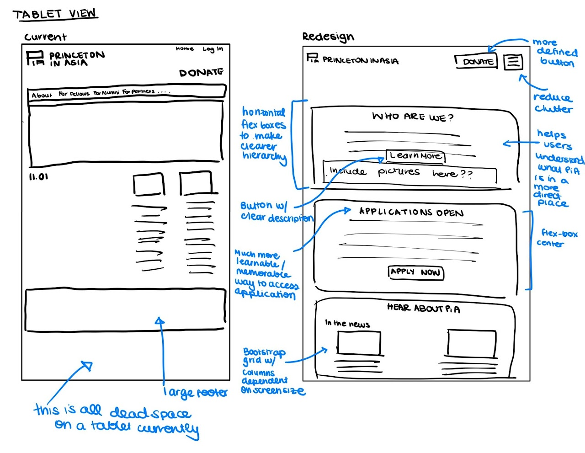
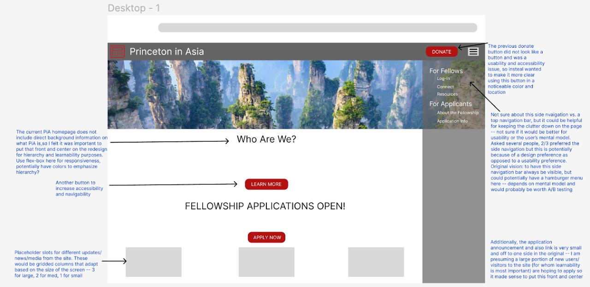

For this project, we were tasked with finding a website whose usability could be improved and going through the redesign process:
1) Problem: Analyzing the website for accessibility, usability, and responsivity issues
2) Wireframing: Making lo-fi sketches and wireframes to consider redesign options
3) High-fidelity Prototypes: Using Figma to visualize the website and incorporating design principles
4) Final Website: Coding the redesigned page in HTML/CSS with dummy elements
I chose the website for the Princeton in Asia (PiA) Fellowship. PiA is an organization out of Princeton University that sponsors
fellowships for recent graduates to do work in various sectors in several countries throughout Asia.
Competencies Demonstrated
Wireframing | Figma | HTML | CSS | Bootstrap
The first thing we evaluated was the WAVE Accessibility of our chosen sites. This was to help give us a general sense for
what the website was doing well and what they could improve on.
Following that, the five main changes I decided on were:
1) Addressing the overly cluttered navigation bar
2) Making the important pages more accessible from the home page (through the use of clear buttons)
3) Removing dead-space on the page through the use of flex-boxes
4) Updating fonts and color schemes to have better hierarchy and contrast (and be slightly more modern)
5) Updating the responsiveness so that it looked better on non-Desktop devices
Prior to starting the actual re-design process, I put together some hand-drawn lo-fi prototypes for each device size (computer, tablet, and phone) to help me conceptualize the hierarchy of the site and figure out what to prioritize in terms of the actual website.
Next, I used Figma to make higher-fidelity visual concepts for what the website could actually look like. This process allowed me to understand the kinds of HTML and CSS elements that would be necessary to actually code the website. It also allowed for more specific planning on how to toggle between different views for different devices. Asking questions like: how should the font size change across devices? What would be the best approach (usability and accessibility wise) for dealing with navigation across devices?
Lastly, I used HTML and CSS (primarily Bootstrap templates) to put together a mock version of the page with dummy elements to model user interaction. Since it was my first project using HTML/CSS, it is very rudimentary. You can view the mockup here
Through this project I learned about the importance of prioritizing accessibility and responsiveness when designing and implementing new sites (and apps). It was my first experience with Figma -- so I learned about design principles, developing visual guides, and interactivity. It was also my first experience with HTML/CSS, which was an adventure... so if given the opportunity to redo this project (which I likely will) I would take better advantage of documentation and online tutorials to build towards a site I was proud of.
If you found this project interesting, you can read my unabridged project synopsis here